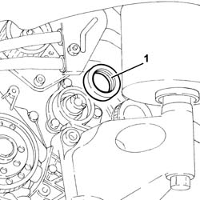
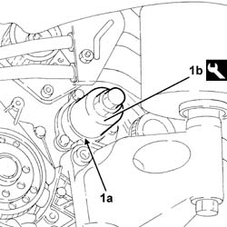

1020E20 front oil seal of one counter-rotating shaft, l or r - r + r
- Path
- Procedures > 10 ENGINE > 1020 CRANKCASE SUMP AND COVERS > 1020E oil seals on counter-rotating shafts > 1020E20 front oil seal of one counter-rotating shaft, l or r - r + r
- Kind
- repair procedure (removal / refitting; the operation number is the code)
- Applies to
- engines: 2.0 TS; all production periods
- Interactive page
- https://sloeber94.github.io/elrnDB-a147/en/#/3024932
Applies to: engines: 2.0 TS; all production periods
 Removing
Removing
 Refitting
RefittingPosition the vehicle on the ramp.
Ensure that the ignition key is in the OFF position, then disconnect the negative battery terminal (-).
 | Name | Connector |
|---|---|---|
- | Battery |
Proceed with the removal 4450B10 Front WHEEL (one) - R.R. (Right side).
Proceed with removal 7055B54 under-engine guard - r r .
Proceed with the removal 7055B64 Engine compartment DUST shield in front wheel arch (one), left or right - R.R. (Right side).
Proceed with removal 1092G10 single engine belt r r .
Proceed with removal 1092A10 Crankshaft services PULLEY - R.R. .
Proceed with removal 1092G20 engine component single belt fixed tensioner - one - r + r .
Proceed with removal 1092G14 engine component single belt mobile tensioner - r + r .
Proceed with removal 1032D12 timing system protective cover(s) - r + r .
Proceed with removal 1092E10 counter-rotating shaft drive toothed belt - r + r .
Proceed with removal 1092E24 counter-rotating shaft pulley - r + r with toothed belt removed .
1. Release and remove the counter-balance shaft front oil seal.

Applies to: engines: 2.0 TS; all production periods
Refitting
Removing1. Place a new counter-balance shaft oil seal (1a) back in the housing in the oil cover on the side concerned using the tool (1b).
 | Name | Country |
|---|---|---|
1b | Fitting tool | 1.821.251.000 |

Applies to: engines: 2.0 TS; all production periods
Proceed with refitting 1092E24 counter-rotating shaft pulley - r + r with toothed belt removed .
Proceed with refitting 1092E10 counter-rotating shaft drive toothed belt - r + r .
Proceed with refitting 1032D12 timing system protective cover(s) - r + r .
Proceed with refitting 1092G14 engine component single belt mobile tensioner - r + r .
Proceed with refitting 1092G20 engine component single belt fixed tensioner - one - r + r .
Proceed with refitting 1092A10 Crankshaft services PULLEY - R.R. .
Proceed with refitting 1092G10 single engine belt r r .
Proceed with the refitting 7055B64 Engine compartment DUST shield in front wheel arch (one), left or right - R.R. (Right side).
Proceed with refitting 7055B54 under-engine guard - r r .
Proceed with the refitting 4450B10 Front WHEEL (one) - R.R. (Right side).
Connect the negative (-) battery terminal.
Remove the car from the ramps.
Topics linked from this page (11)
- 1032D12 timing system protective cover(s) - r + r
- 1092A10 Crankshaft services PULLEY - R.R.
- 1092E10 counter-rotating shaft drive toothed belt - r + r
- 1092E24 counter-rotating shaft pulley - r + r with toothed belt removed
- 1092G10 single engine belt r r
- 1092G14 engine component single belt mobile tensioner - r + r
- 1092G20 engine component single belt fixed tensioner - one - r + r
- 4450B10 Front WHEEL (one) - R.R.
- 7055B54 under-engine guard - r r
- 7055B64 Engine compartment DUST shield in front wheel arch (one), left or right - R.R.
- A1B Battery ( Connectors )